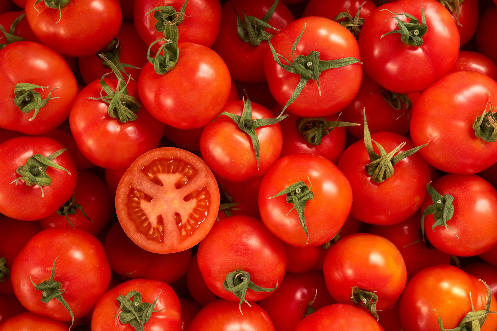

About Tomato
The tomato is the edible berry of the plant Solanum lycopersicum,commonly known as the
tomato plant. The species originated in western South America and Central America.The
Mexican Nahuatl word tomatl gave rise to the Spanish word tomate, from which the English word
tomato derived.Its domestication and use as a cultivated food may have originated with
the indigenous peoples of Mexico.The Aztecs used tomatoes in their cooking at the time of
the Spanish conquest of the Aztec Empire, and after the Spanish encountered the tomato for the
first time after their contact with the Aztecs, they brought the plant to Europe, in a
widespread transfer of plants known as the Columbian exchange. From there, the tomato was
introduced to other parts of the European-colonized world during the 16th century.
Tomatoes are a significant source of umami flavor.It is consumed in diverse ways: raw or
cooked, and in many dishes, sauces, salads, and drinks. While tomatoes are fruits—botanically
classified as berries—they are commonly used culinarily as a vegetable ingredient or side
dish.
Condition to grow Tomato:-
-
Type of soil require
Tomato can be grown on a wide range of soils from sandy to heavy clay. However,
well-drained, sandy or red loam soils rich in organic matter with a pH range of 6.0-7.0 are
considered as ideal.
-
Climate
Tomato is a warm season crop. The best fruit colour and quality is obtained at a temperature
range of 21-24°C. Temperatures above 32o C adversely affects the fruit set and development.
The plants cannot withstand frost and high humidity. It requires a low to medium rainfall.
Bright sunshine at the time of fruit set helps to develop dark red coloured fruits.
Temperature below 10 oC adversely affects plant tissues thereby slowing down physiological
activities.
-
Irrigation
Tomato is very sensitive to water application. Heavy irrigation provided after a long spell
of drought causes cracking of the fruits. Hence it should be avoided. Light irrigation
should be given 3-4 days after transplanting. Irrigation intervals should be according to
soil type and rainfall, irrigation should be given 7-8 days interval during kharif, during
rabi 10-12 days and 5-6 days during summer.
Flowering and fruit development are the critical stages of tomato therefore; water stress
should not be given during this period.
-
Manuring & Fertilization
The fertilizer dose depends upon the fertility of soil and amount of organic manure applied
to the crop. For a good yield, 15-20 tonnes of well-decomposed FYM is incorporated into the
soil. Generally, application of 120 kg N, 80 kg P2O5 and 50 kg K2O per hectare is
recommended for getting optimum yield. Half dose of N and full dose of P and K is given at
the time of planting. The balance half of N is given as top dressing 30 days after
transplanting.
For hybrid varieties, the recommended dose per hectare is 180 kg N, 100 kg P2 O5 and 60 kg
K2 O. 60 kg N and half of P & K are given at the time of transplanting. Remaining quantities
of P & K and 60 kg N is top dressed 30 after transplanting. A third dose of 60 kg N is
applied 50 days after transplanting.